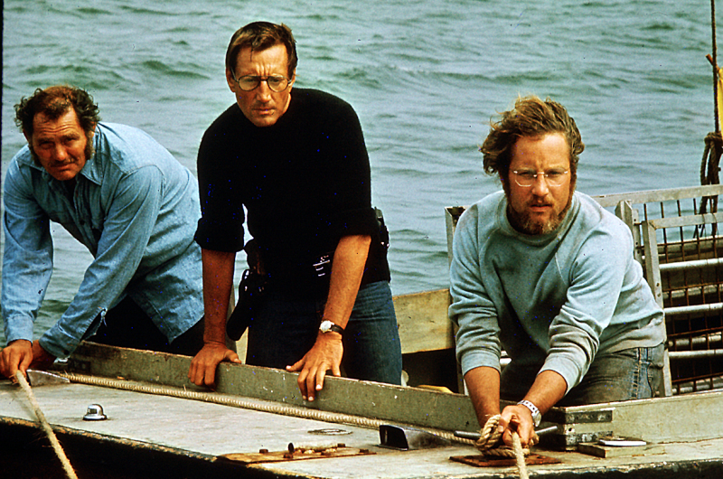

JAWS
| ROLE | DETAILS |
|---|---|
| Main Actors | Roy Scheider, Richard Dreyfuss, Lorraine Gary |
| Directors | Steven Spielberg |
| Age Restriction | +13 years |
| Showing Time | 19h:30 |
BRIEF SYNOPSIS
When a young woman is killed by a shark while skinny-dipping near the New England tourist town of Amity Island, police chief Martin Brody (Roy Scheider) wants to close the beaches, but mayor Larry Vaughn (Murray Hamilton) overrules him, fearing that the loss of tourist revenue will cripple the town. Ichthyologist Matt Hooper (Richard Dreyfuss) and grizzled ship captain Quint (Robert Shaw) offer to help Brody capture the killer beast, and the trio engage in an epic battle of man vs. nature